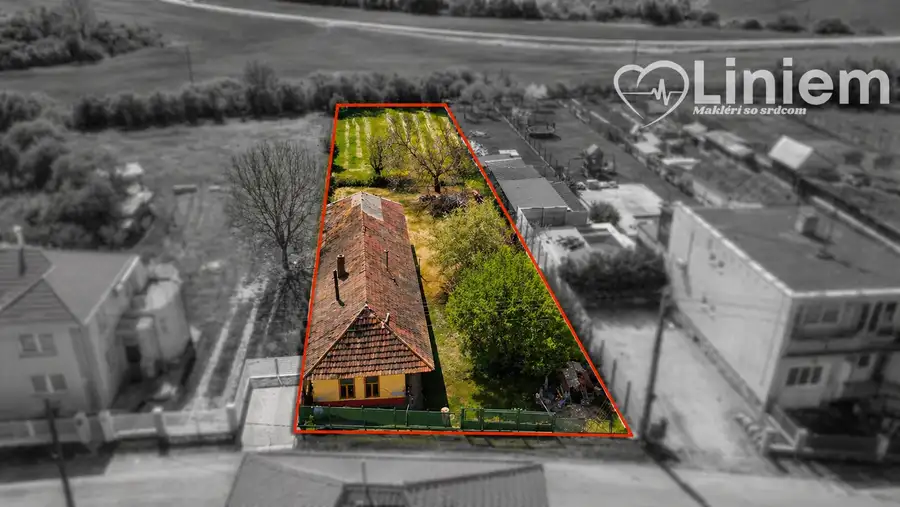
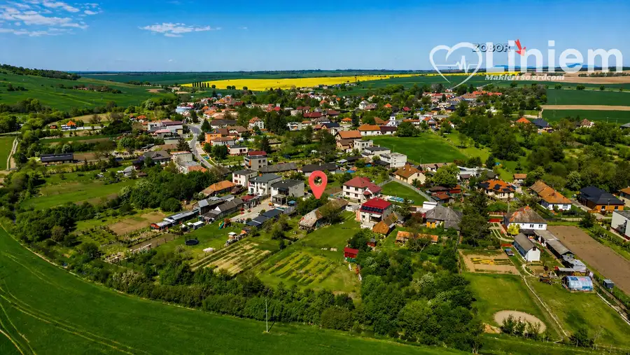
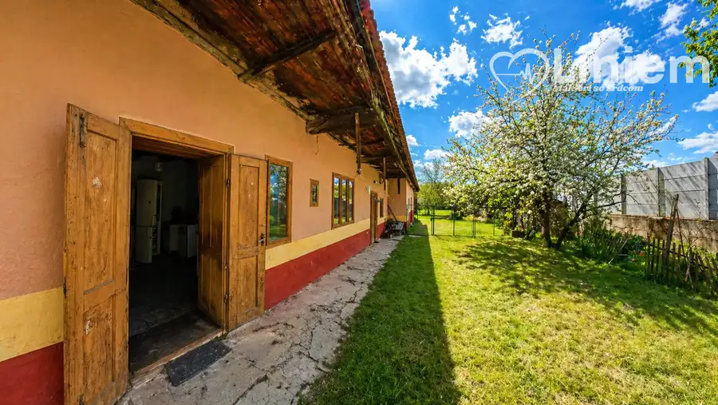
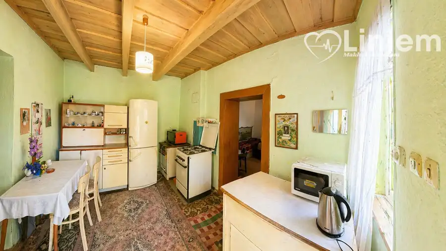
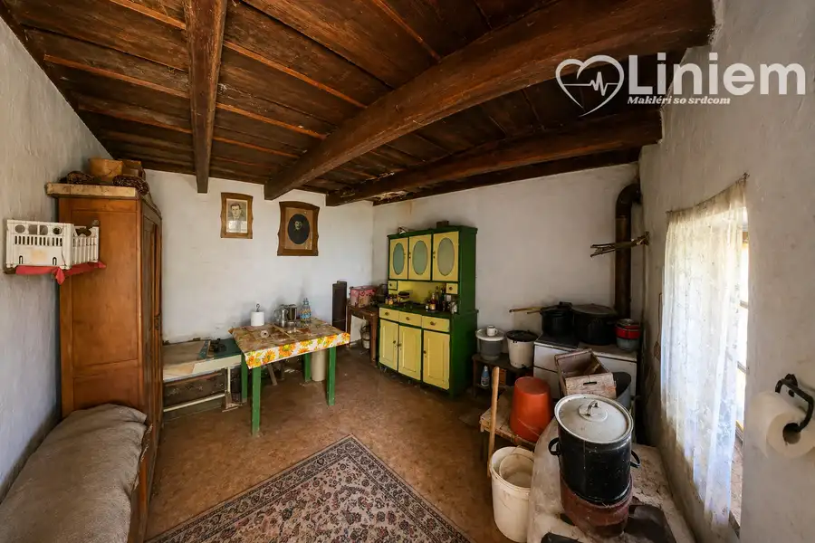
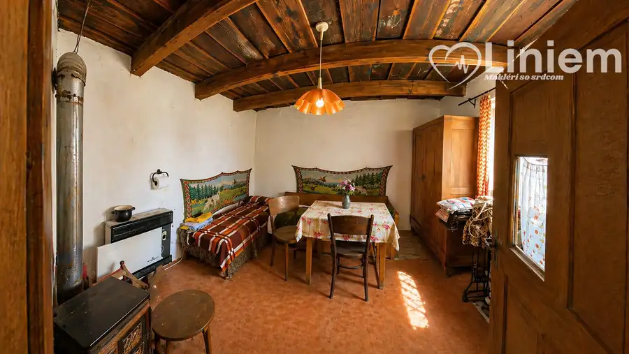
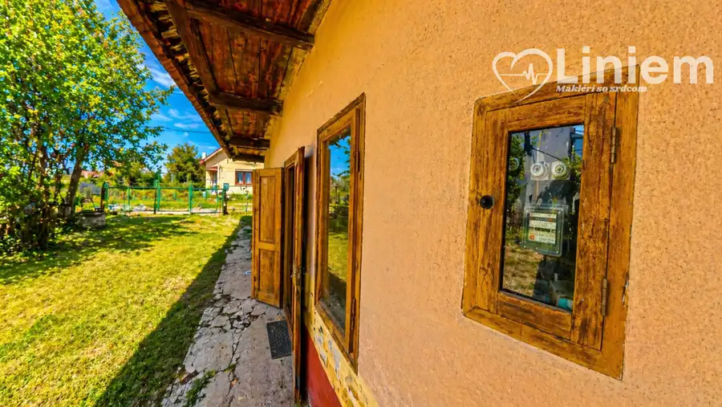

Znížená cena - Domček s príbehom v obci Pozba
Pozba







- Plocha130 m²
- StavPôvodný stav
- VlastníctvoOsobné
O nehnuteľnosti
Dom, ktorý si pamätá viac než len roky…Niektoré nehnuteľnosti sú len stavby. A potom sú domy, ktoré majú vlastný príbeh.🎥 Videoobhliadka: https://youtu.be/uokG-rc9R8cNOVÁ ZNÍŽENÁ CENA: 38 000 €Ak hľadáte nehnuteľnosť s veľkým pozemkom, pokojom, atmosférou a priestorom na vlastnú predstavu, táto ponuka môže byť práve pre vás.Na pozemku s výmerou 1 470 m² sa nachádza starší vidiecky dom s rozlohou približne 130 m². Dom je v pôvodnom stave a bude si vyžadovať rozsiahlu rekonštrukciu. Zároveň však ponúka aj druhú možnosť – využiť predovšetkým samotný pozemok a existujúcu stavbu odstrániť, ak by mal nový majiteľ inú predstavu o budúcom využití nehnuteľnosti.Je teda na vás, či v starom dome uvidíte základ pre náročnú rekonštrukciu a zachovanie jeho charakteru, alebo priestor pre úplne nový projekt.🏡 Čo nehnuteľnosť ponúka?• pozemok s výmerou 1 470 m²• starší vidiecky dom približne 130 m²• 3 nepriechodné izby a kuchyňa• pivnica• studňa, ktorá bola dlhší čas nevyužívaná• záhrada a ovocné stromy• kúrenie pieckou a plynovými gamatkami• sociálne zariadenie v dome nie je vybudovanéTechnický stav domu si vyžaduje individuálne posúdenie a počítať treba s rozsiahlymi stavebnými úpravami.🕰️ Dom s príbehomTento dom však nie je zaujímavý iba tým, čo ponúka dnes. Nesie v sebe aj kus histórie a spomienok minulých generácií.Pri dome sa nachádza pivnica, ktorá podľa rozprávania kedysi slúžila ako úkryt počas vojny, keď dedinou prechádzali tanky a ľudia žili v neistote.Dnes je situácia úplne iná. Zostala však atmosféra miesta, veľká záhrada, zeleň a priestor, ktorý môže dostať úplne novú podobu.🌿 Dve možnosti, jeden veľký pozemok🏡 Zachovať a zrekonštruovaťPre niekoho môže byť starý dom základom rozsiahlej rekonštrukcie a vytvorenia vlastného vidieckeho bývania či chalupy.🏗️ Využiť potenciál pozemkuPre iného môže byť zaujímavejšia cesta odstránenia pôvodnej stavby a vytvorenia nového projektu podľa vlastných predstáv a možností pozemku.Práve veľkosť pozemku, pokojné prostredie a lokalita dávajú tejto nehnuteľnosti priestor na rôzne predstavy o budúcom využití.📍 Atraktívne okolieV blízkom okolí sa nachádza Mariánska Čeľaď, Studnička Pozba a vyhľadávané Termálne kúpalisko Podhájska, ktoré ponúka celoročné kúpanie a wellness služby.🌳 Pozemok: 1 470 m²🏡 Dom: cca 130 m²🛠️ Pôvodný stav – vhodný na rozsiahlu rekonštrukciu🏗️ Možnosť zvážiť aj využitie pozemku pre nový projekt💧 Studňa na pozemku🌿 Záhrada a ovocné stromy💶 Znížená cena: 38 000 €Nie je to nehnuteľnosť pre toho, kto hľadá hotové bývanie bez ďalších investícií.Je to ponuka pre človeka, ktorý hľadá veľký pozemok, pokojné prostredie a možnosť rozhodnúť sa, akú budúcnosť tomuto miestu dá.Či už vás láka zachovať starý dom a vdýchnuť mu nový život, alebo začať úplne od začiatku, rozhodnutie môže byť na vás.V prípade záujmu o viac informácií alebo obhliadku ma neváhajte kontaktovať.Martina Maronová | Liniem reality📞 0949 231 354✉️ maronova@liniemreality.sk
Parametre
- Druh
- Vidiecky dom
- Dátum zverejnenia
- 06. 05. 2026
- Dĺžka pozemku
- 82
- Plocha pozemku
- 1470 m²
- Počet izieb / miestností
- 3
- Počet pivníc
- 1
- Stav nehnuteľnosti
- Pôvodný stav
- Telekomunikácie
- Telefón, Internet, Satelit
- Terén pozemku
- Prevažne rovinatý
- Typ
- Predaj
- Typ konštrukcie
- Hlinená
- Vlastníctvo
- Osobné
- Vybavenie
- Pivnica, Verejné parkovanie, Sklad, Technická miestnosť
- Zariadenie
- Čiastočne zariadené
- Zastavaná plocha
- 130 m²
- Úžitková plocha
- 130 m²
- Šírka pozemku
- 18